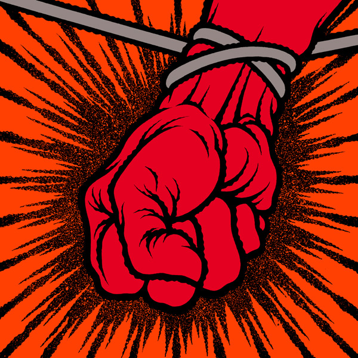

Official Albums
Click on image to enlarge
Kill 'Em All
Release Date: July 1983
1. Hit The Lights (4:17)
2. The Four Horsemen (7:12)
3. Motorbreath (3:08)
4. Jump In The Fire (4:41)
5. (Anesthesia) Pulling Teeth (4:14)
6. Whiplash (4:09)
7. Phantom Lord (5:01)
8. No Remorse (6:26)
9. Seek & Destroy (6:55)
10. Metal Militia (5:10)
11. Blitzkrieg* (3:36)
12. Am I Evil?* (7:50)
* Bonus tracks on the USA & Canadian versions.

Ride the Lightning
Release Date: August 1984
1. Fight Fire With Fire (4:45)
2. Ride The Lightning (6:36)
3. For Whom The Bell Tolls (5:09)
4. Fade To Black (6:57)
5. Trapped Under Ice (4:04)
6. Escape (4:23)
7. Creeping Death (6:36)
8. The Call of Ktulu (8:53)

Master of Puppets
Release Date: February 1986
1. Battery (5:10)
2. Master Of Puppets (8:38)
3. The Thing That Sould Not Be (6:32)
4. Welcome Home (Sanitarium) (6:28)
5. Disposable Heroes (8:14)
6. Leper Messiah (5:38)
7. Orion (8:12)
8. Damage, Inc. (5:08)
...And Justice for All
Release Date: August 1988
1. Blackened (6:40)
2. ...And Justice For All (9:44)
3. Eye Of The Beholder (6:25)
4. One (7:24)
5. The Shortest Straw (6:35)
6. Harvester Of Sorrow (5:42)
7. The Frayed Ends Of Sanity (7:40)
8. To Live Is To Die (9:48)
9. Dyers Eve (5:12)
10. The Prince* (4:26)
*Bonus track, Japan only.
Black Album
Release Date: August 1991
1. Enter Sandman (5:31)
2. Sad But True (5:24)
3. Holier Than Thou (3:47)
4. The Unforgiven (6:27)
5. Wherever I May Roam (6:44)
6. Don't Tread On Me (4:00)
7. Through The Never (4:04)
8. Nothing Else Matters (6:28)
9. Of Wolf And Man (4:16)
10. The God That Failed (5:08)
11. My Friend Of Misery (6:49)
12. The Struggle Within (3:53)
13. So What!* (3:09)
* Bonus track (Asian editions).
Load
Release Date: June 1996
1. Ain't My Bitch (5:04)
2. 2x4 (5:28)
3. The House Jack Built (6:39)
4. Until It Sleeps (4:29)
5. King Nothing (5:28)
6. Hero Of The Day (4:21)
7. Bleeding Me (8:19)
8. Cure (4:54)
9. Poor Twisted Me (4:00)
10. Wasting My Hate (3:57)
11. Mama Said (5:19)
12. The Thorn Within (5:51)
13. Ronnie (5:17)
14. The Outlaw Torn (10:48)
Reload
Release Date: November 1997
1. Fuel (4:29)
2. The Memory Remains (4:39)
3. Devil's Dance (5:18)
4. The Unforgiven II (6:36)
5. Better Than You (5:21)
6. Slither (5:13)
7. Carpe Diem Baby (6:12)
8. Bad Seed (4:05)
9. Where the Wild Things Are (6:52)
10. Prince Charming (6:04)
11. Low Man's Lyric (7:36)
12. Attitude (5:16)
13. Fixxxer (8:15)
Garage Inc. - Disc One
Release Date: November 1998
1. Free Speech For The Dumb (2:35)
2. It's Electric (3:33)
3. Sabbra Cadabra (6:20)
4. Turn The Page (6:06)
5. Die, Die My Darling (2:29)
6. Loverman (7:52)
7. Mercyful Fate (11:11)
8. Astronomy (6:37)
9. Whiskey In The Jar (5:04)
10. Tuesday's Gone (9:05)
11. The More I See (4:48)
Garage Inc. - Disc Two
Release Date: November 1998
1. Helpless (6:38)
2. The Small Hours (6:43)
3. The Wait (4:55)
4. Crash Course In Brain Surgery (3:10)
5. Last Caress/Green Hell (3:28)
6. Am I Evil? (7:50)
7. Blitzkrieg (3:36)
8. Breadfan (5:41)
9. The Prince (4:25)
10. Stone Cold Crazy (2:17)
11. So What? (3:09)
12. Killing Time (3:03)
13. Overkill (4:04)
14. Damage Case (3:40)
15. Stone Dead Forever (4:51)
16. Too Late Too Late (3:12)
S&M - Disc One
Release Date: November 1999
1. Ecstasy Of Gold (2:30)
2. The Call Of Ktulu (9:34)
3. Master Of Puppets (8:54)
4. Of Wolf And Man (4:18)
5. The Thing That Should Not Be (7:26)
6. Fuel (4:35)
7. The Memory Remains (4:42)
8. No Leaf Clover (5:43)
9. Hero Of The Day (4:44)
10. Devil's Dance (5:26)
11. Bleeding Me (9:01)
S&M - Disc Two
Release Date: November 1999
1. Nothing Else Matters (6:47)
2. Until It Sleeps (4:30)
3. For Whom The Bell Tolls (4:52)
4. Minus Human (4:19)
5. Wherever I May Roam (7:01)
6. The Outlaw Torn (9:58)
7. Sad But True (5:46)
8. One (7:53)
9. Enter Sandman (7:39)
10. Battery (7:24)

St. Anger
Release Date: June 2003
1. Frantic (5:46)
2. St. Anger (7:19)
3. Some Kind Of Monster (8:24)
4. Dirty Window (5:23)
5. Invisible Kid (8:28)
6. My World (6:30)
7. Shoot Me Again (7:09)
8. Sweet Amber (5:24)
9. Unnamed Feeling (7:07)
10. Purify (5:13)
11. All Within My Hands (8:44)
Death Magnetic
Release Date: September 2008
1. That Was Just Your Life (7:08)
2. The End of the Line (7:52)
3. Broken, Beat & Scarred (6:52)
4. The Day That Never Comes (7:56)
5. All Nightmare Long (7:57)
6. Cyanide (6:39)
7. The Unforgiven III (7:46)
8. The Judas Kiss (8:00)
9. Suicide & Redemption (9:57)
10. My Apocalypse (5:01)
Through the Never Soundtrack - Disc One
Release Date: September 2013
1. The Ecstasy Of Gold (2:02)
2. Creeping Death (06:20)
3. For Whom The Bell Tolls (4:49)
4. Fuel (3:58)
5. Ride The Lightning (6:55)
6. One (8:25)
7. The Memory Remains (5:43)
8. Wherever I May Roam (6:19)
Through the Never Soundtrack - Disc Two
Release Date: September 2013
1. Cyanide (7:02)
2. ...And Justice For All (9:18)
3. Master Of Puppets (8:26)
4. Battery (5:14)
5. Nothing Else Matters (7:22)
6. Enter Sandman (6:22)
7. Hit The Lights (4:40)
8. Orion (8:27)


{kind=link}
{kind=link}
{kind=link}
{kind=link}
{kind=link}
{kind=link}
{kind=link}
{kind=link}
{kind=link}
{kind=link}